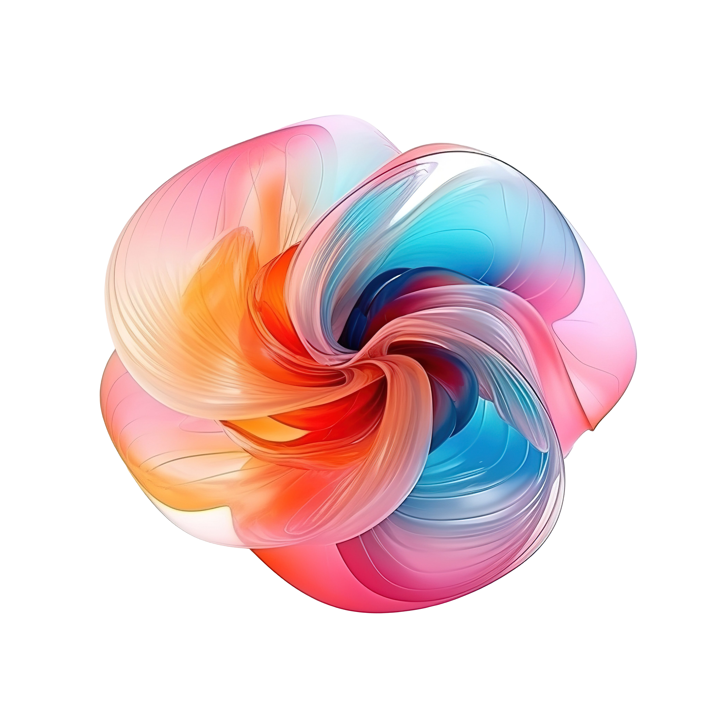
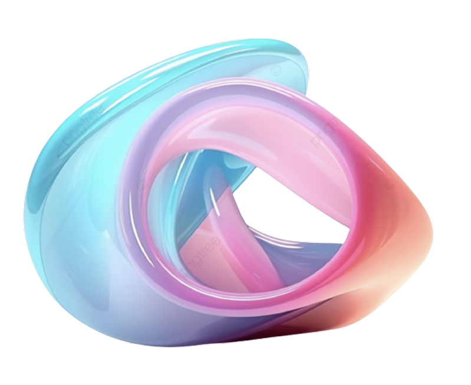
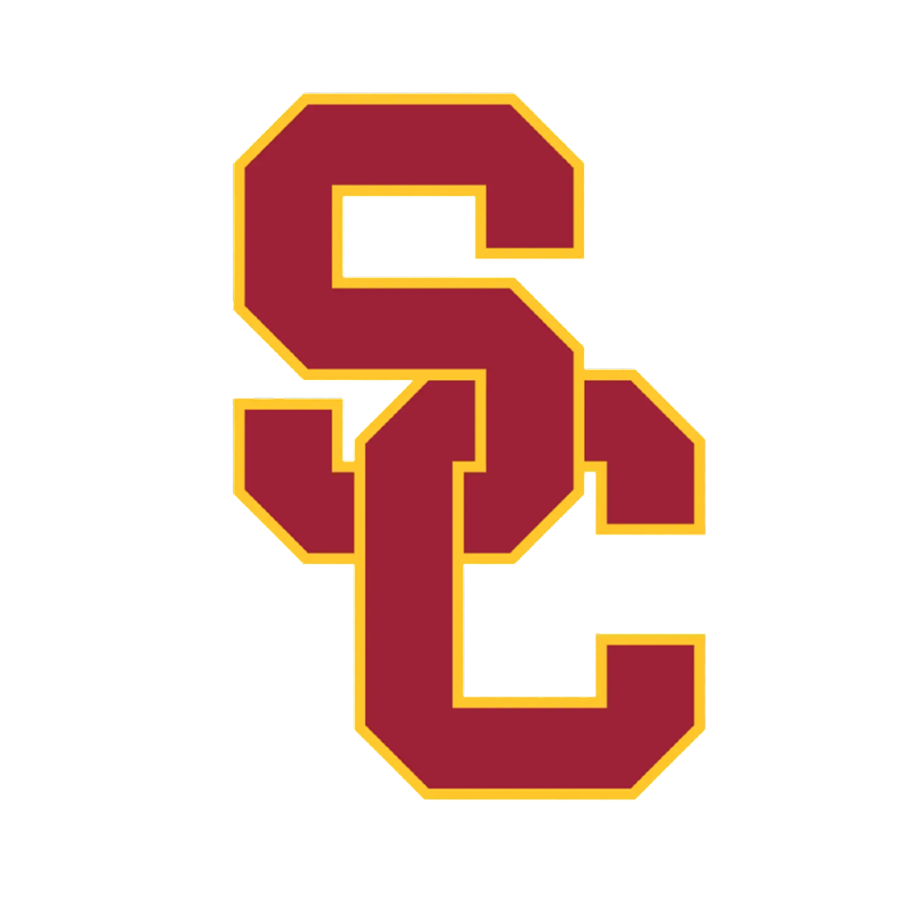
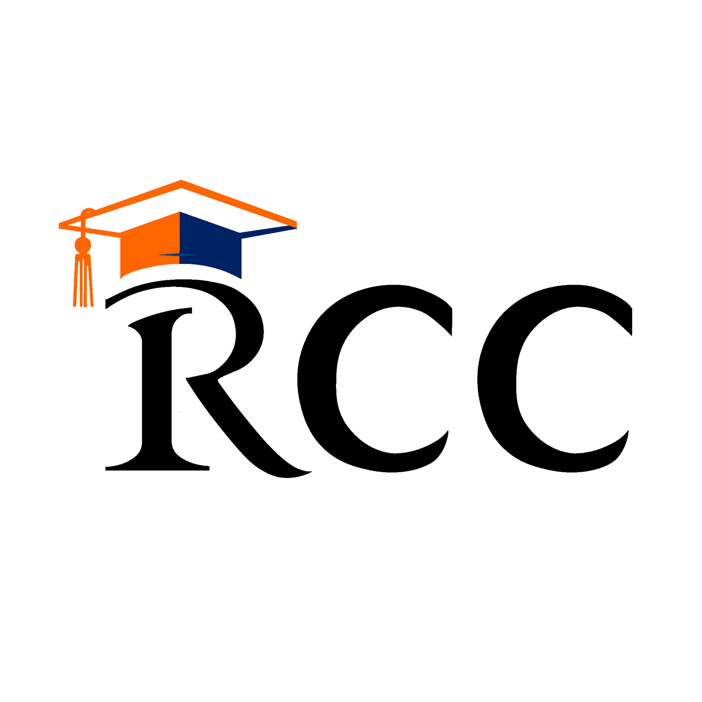

Hello, my name is Christina Doolan. Im a USC senior with a passion for blending the science of the mind and the art of design. I aim to craft user experiences that seamlessly combine functionality and visual appeal. As a lifelong learner, I am always on the lookout for new innovations and applications in design!

UX/UI Designer

Front End Developer
Visual Designer
UX Researcher
Bluebeam Software
• Redesigned pre-portal virtual training sites and videos using Figma, jQuery, and Premiere Pro, customizing
the Skilar page and improving the initial user experience for Bluebeam’s 3 million subscribers
• Created 100+ thumbnails for live trainings, courses, how-to guides, and related content, ensuring cohesive
and on-brand visuals while clearly differentiating categories and individual items from the user's perspective
• Coded responsive emails for mobile and web screens, enhancing engagement for existing and new customers
• Engaged with Bluebeam executives, including CEO Usman Shuja, to gather insights on their experiences

USC Marshall Office of Executive Education
• Increase enrollment and brand awareness through marketing campaigns, banners, and organic posts resulting
in 3,000 new followers and an increase in average monthly engagement by over 7,000 impressions
• Created top three LinkedIn posts each yielding over 4,500 impressions and 100 engagements
• Manage YouTube channel increasing subscriber base by 200% and raising average monthly views by 10,000
• Partner in major conferences alongside Kaiser Permanente and The Josh Bersin Company
USC Marshall Master of Business for Veterans
• Design visually captivating graphics using Mid Journey, Adobe Creative Suite, and Figma
• Curate engaging social media content boosting LinkedIn impressions by 287% and engagement by 296%
• Collaborate weekly with the MBV team to align graphic designs with strategic campaigns and messaging

•Trusted to lead a comprehensive company logo redesign, enhancing brand aesthetics and visual appeal
• Revitaized company identity, transforming brands' online presence to align with current market trends
• Redesigned company website to create a more user-friendly interface aiming to elevate user engagement